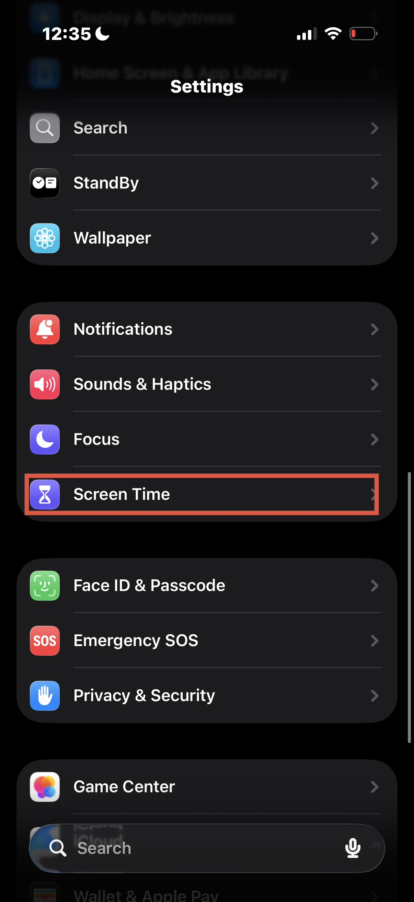
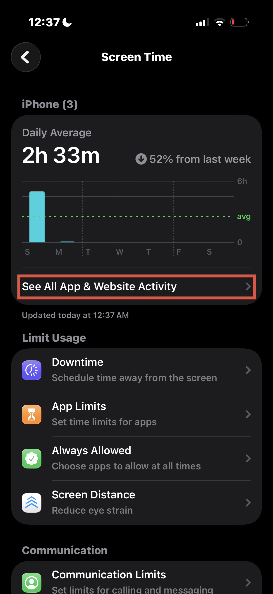
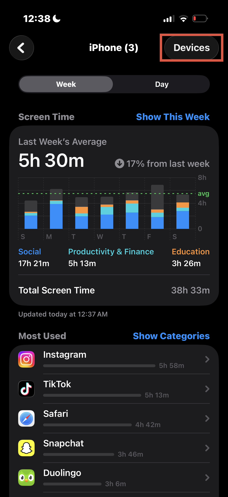
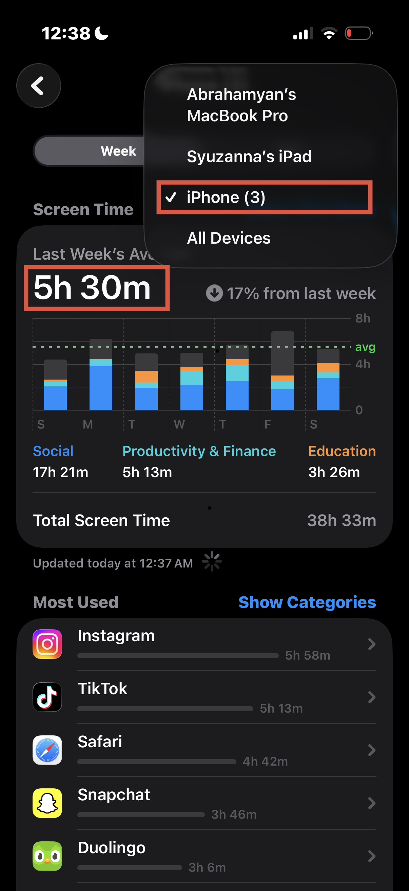
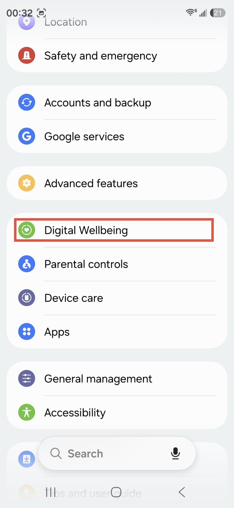
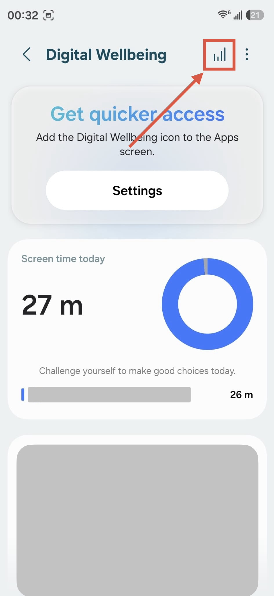
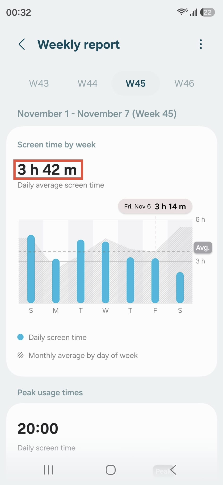

Your Anonymous Session ID is (shown at the top of your screen throughout the study). Please mention this ID to the researcher if you experience any technical issues. It is never linked to your name or identity.
Study Title: Digital Media Habits and Cognitive Task Performance
Purpose: You are invited to participate in a student research project in the Department of Psychology at Glendale Community College. The purpose of this study is to examine general patterns of daily digital device use and performance across visual cognitive tasks.
Procedure: If you agree to participate, you will:
Check your smartphone's built-in screen time tracker (iOS Screen Time or Android Digital Wellbeing) and enter your 7-day daily average screen time along with brief baseline questions (sleep and caffeine).
Complete a brief 9-item questionnaire about your digital habits over the past year.
Complete two short computerized keyboard tasks measuring visual attention and decision-making (about 6–7 minutes total).
Risks and Discomforts: This protocol carries minimal risk, no greater than everyday computer use. You may experience mild cognitive fatigue or boredom during the repetitive computer tasks.
Confidentiality & Voluntary Participation: Participation is completely anonymous and voluntary. No identifying personal information (such as your name, student ID, or IP address) is collected. You may stop participating at any time without penalty.
Contact: Questions may be directed to Syuzanna Abrahamyan (sabraha943@student.glendale.edu) or faculty advisor Dr. Daphne Dionisio.
By clicking below, you confirm that you are 18 or older and voluntarily consent to participate.
Step 1: Daily Smartphone Screen Time & Baseline
Open your smartphone settings and enter your Last Week's Daily Average total screen time (on your phone only).
iPhone (iOS Screen Time)
Open Settings and tap Screen Time.
Tap See All App & Website Activity.
Select Week at the top, then tap Devices (top right).
Select iPhone only (excludes Mac/iPad) and read the large Last Week's Average number boxed in red.
Step 1: Tap Screen Time

Step 2: See All Activity

Step 3: Week → Devices

Step 4: Pick iPhone & Read Avg

Android / Samsung (Digital Wellbeing)
Open Settings and tap Digital Wellbeing.
Tap the Weekly report bar chart icon in the top-right corner.
Check the most recent completed week and enter the large Daily average screen time number boxed in red.
Step 1: Digital Wellbeing

Step 2: Weekly Chart Icon

Step 3: Read Daily Average Screen Time

Please complete all fields above with valid numbers.
Step 2: Digital Habits Questionnaire
During the past year, have you experienced any of the following regarding social media? Select Yes or No for each statement.
Please answer all 9 items before continuing.
Task 1: Number Response Task
Single numbers from 1 to 9 will appear in the center of the screen at a steady pace.
Press the SPACEBAR quickly whenever you see any number (1, 2, 4, 5, 6, 7, 8, or 9).
DO NOT PRESS anything when the number 3 appears. Hold back and wait for the next number.
Place your hand comfortably on the SPACEBAR now. You will start with a short 6-trial practice round with feedback.
Practice Round
+
Numbers 1, 2, 4–9 → Press SPACEBARNumber 3 → DO NOT PRESS
Practice Complete!
Rest your hand on the SPACEBAR. Remember: press quickly for every number except3.
The main recorded task will begin after a 3-second countdown (72 trials, ~95 seconds).
Task 2: Color-Word Matching Task
Color words (such as red, blue, green, or yellow) will appear on the screen printed in colored ink.
Decide as quickly and accurately as possible whether the ink color matches the written word:
Press F if the ink color MATCHES the word (e.g., "red" printed in red ink).
Press J if the ink color DOES NOT MATCH the word (e.g., "red" printed in blue ink).
Rest your left index finger on F and right index finger on J. You will begin with a 4-trial practice round.
Practice Round
+
[ F ] = MATCH[ J ] = MISMATCH
Practice Complete!
Place your left index finger on F (Match) and your right index finger on J (Mismatch).
The main recorded task will begin after a 3-second countdown (32 trials, ~40 seconds).
Study Complete — Thank You!
Completed Session ID:
Your anonymous responses have been recorded automatically. Please remain quietly seated until everyone in your session has finished.
Your Performance Summary
Task 1: Sustained Attention (Number Task)
No-Go Control (Holding back on 3):
Go Accuracy (Pressing 1–9):
Average Reaction Speed:
Measures how consistently you maintained focus during a repetitive rhythm without impulsively pressing on 3.
Task 2: Cognitive Control (Stroop Task)
Overall Accuracy:
Matching Speed:
Mismatched Speed:
Stroop Slowdown Cost:
Almost everyone is 50–150 ms slower when the word and ink color conflict because the brain has to suppress automatic word reading.
Study Debriefing: Thank you for participating in this PSYC 200 research project at Glendale Community College. The purpose of this study is to examine whether daily smartphone screen time and problematic social media habits are associated with sustained attention slips (measured by the number task) and cognitive interference control (measured by the color-word matching task).